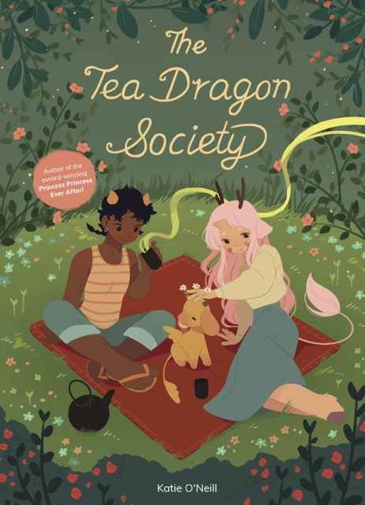

Websites
Heart of Gold
Link
There's webcomics hosted on major sites like Webtoons or Tapas. Then there's those hosted on their own sites. The webcomic Heart of Gold goes the extra mile by not only having its own robust website with beautiful design to complement the breathtaking visuals of the comic but a bookmarking system and comments section for each page.

Mateusz Urbanowicz's Personal Website
Link
Mateusz Urbanowicz is a renowned watercolor artist who I found through his
series of paintings depicting Tokyo, Japan at night. His ability to capture
atmosphere is present in both his watercolor works and his personal
website. It's full of bright colors and detail, yet not too overwhelmed with page
elements, giving it the impression of a calm, summer afternoon.
Unique details such hand-drawn illustrations of Urbanowicz's favorite art tools and the
well maintained, comprehensive nature of the website keep it memorable for me.
Games
OMORI
For me, the visuals are always what first draw me to a game, and storytelling is what
draws me to stay. Indie game OMORI is a prime example of this.
The creator of OMORI, OMOCAT, is an illustrator
by profession who learned to code in order to make this game. OMOCAT's illustrator background
shows in the best way possible. The game capitalizes on what visual artists are some of the best
at: conveying emotions.
The player is emotionally shaken left and right going between the cutesy Headspace of the protagonist,
the nightmarish monsters hiding within his imagination, and the bleary real world he is forced to
reconcile with no matter how much he tries to hide. I came to OMORI first because of its
adorable characters and artstyle and stayed to have my heart broken in the best way possible.
Genshin Impact
In spite of Genshin Impact's labels as an action-adventure game, one of the best things to do in the game is to simply exist. I adore a game where its ambience is half the fun. Each region within the open-world game is distinct with a personality of its own built by its captivating music, fantastical visual style, and minute details down to the way the seagrass parts as you swim through it.
Artists
K. O'Neill
One of my earliest inspirations in illustration. The "Tea Dragon Society" graphic novel series took my heart by storm and never let go. There's something about the fluid lines, soft colors, and abundance of love in each of their works that keeps me coming back for more.
Porter Robinson
Though he is not necessarily a visual artist, music artist Porter Robinson's
songs and accompanying music videos have such a distinctively airy and intimate
tone that I had to include him among my inspirations.
In particular, his songs
"Wind Tempos", "Shelter", and "Everything Goes On" have cemented themselves as
some of my favorite songs and music videos of all time. In fact, the "Wind Tempos"
music video was the primary inspiration for one of my first ever personal
websites.